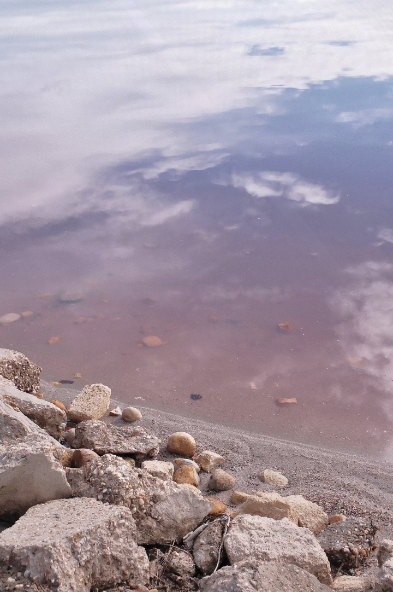
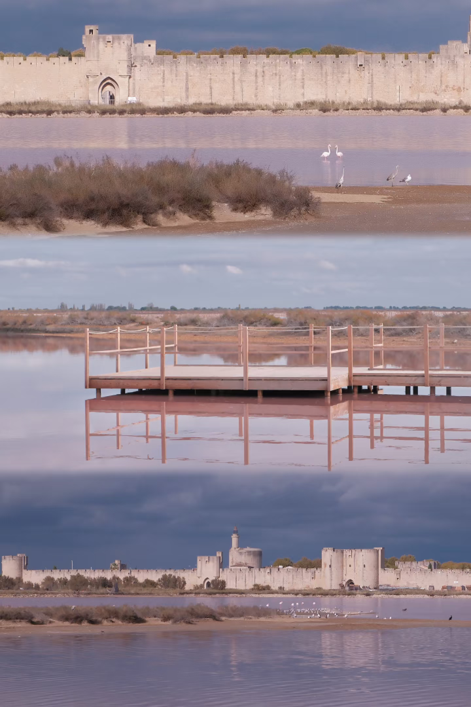

Explore the Dreamy Colors of the Aigues-Mortes Salt Pans
Aigues-Mortes is more than just a salt pan; it is a miracle sealed by time. Sturdy medieval walls stand beside the pink waters, reflecting both the vicissitudes of history and the softness of nature.
Here, you can stroll through ancient fortifications, feel the historical echoes of the Crusades, and be healed by this dreamlike "Sea of Roses" before your eyes.

As you approach the lake, you'll discover this is no ordinary body of water. The high salt concentration and special algae work together to give the water its incredible hue.
The white salt crystals on the shore contrast sharply with the pinkish-purple water. Every stone and every wave looks like a meticulously crafted piece of art. This is nature's most generous gift and a timeless favorite under photographers' lenses.

Actually, flamingos can be found in many parts of the world, such as the lakes of the East African Rift, the Andean plateau in South America, and the Caribbean. What makes Aigues-Mortes so special is that, as Europe's first pink flamingo sanctuary, it possesses unique pink salt pans and vast wetlands, providing this beautiful bird with an extremely rare and perfect paradise for foraging and breeding on the European continent.
This is the heart of the Camargue Nature Reserve.
Flocks of flamingos forage elegantly in the shallows, the true guardians of this pink wetland.
Bring your telephoto lens and capture the beautiful moments where wildness and tranquility coexist.